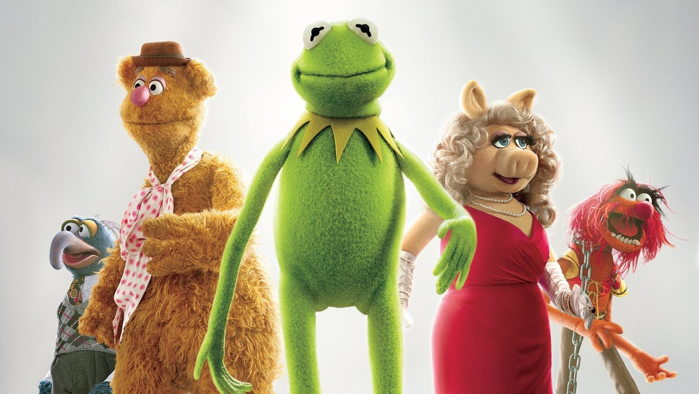
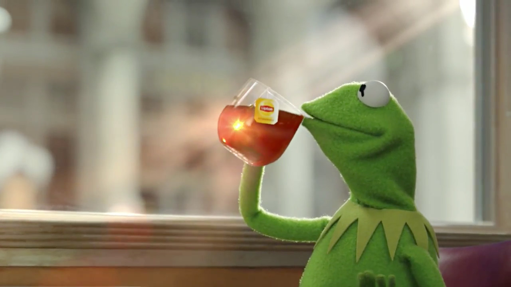
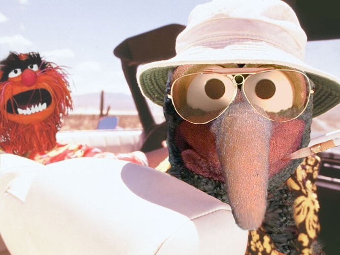
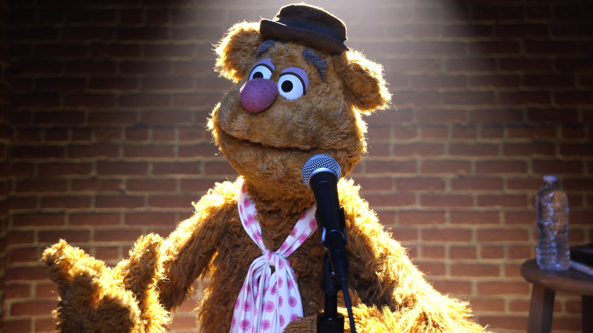

PUPPETS
The Muppets are a group of puppet characters known for an absurdist, burlesque and self-referential style of variety-sketch comedy.
FRIENDS
Watch the official The Muppets online at ABC.com. Get exclusive videos, blogs, photos, cast bios, free episodes and more.
EVENTS
Welcome to Disney The Muppets' official events channel. This channel is home to the world's most beloved group of international puppetsOUR PROJECTS

Surprises
The Muppets return to primetime with a contemporary, documentary-style show. For the first time ever, a series will explore the Muppets’ personal lives and relationships, both at home and at work.

Adventure
The Muppets return to primetime with a contemporary, documentary-style show. For the first time ever, a series will explore the Muppets’ personal lives and relationships, both at home and at work.

Comedy
The Muppets return to primetime with a contemporary, documentary-style show. For the first time ever, a series will explore the Muppets’ personal lives and relationships, both at home and at work.Follow Us Here